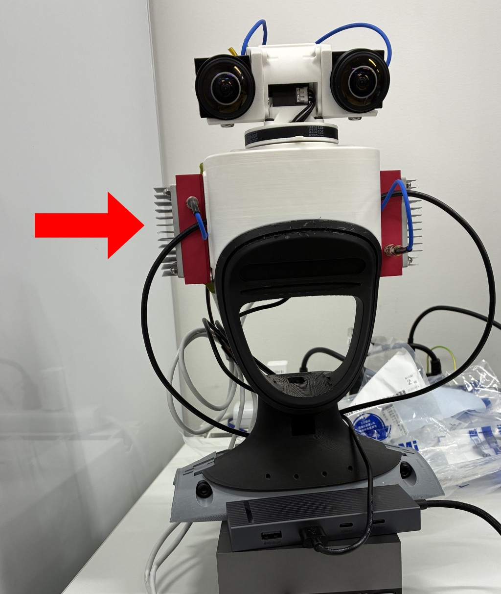
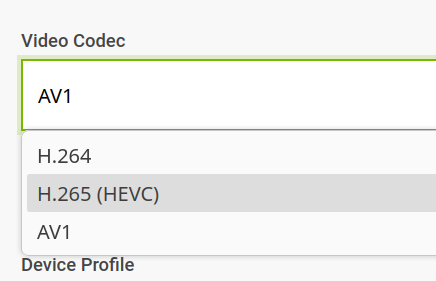
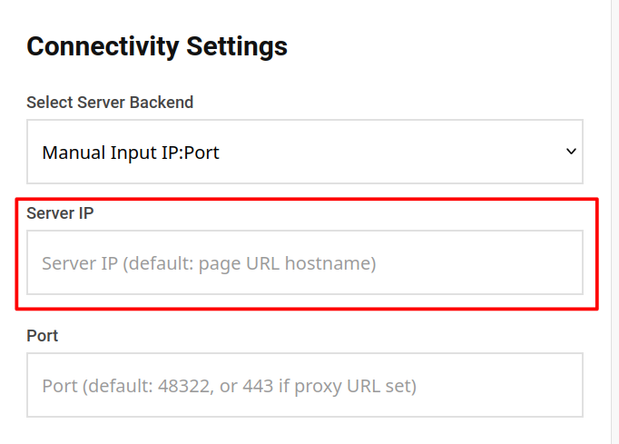
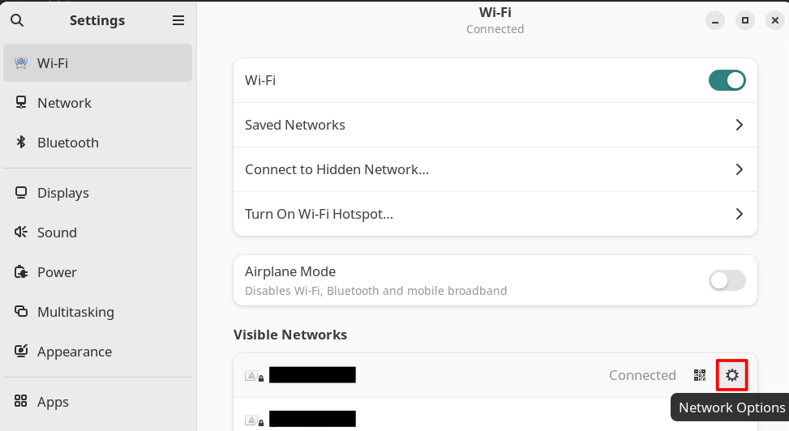
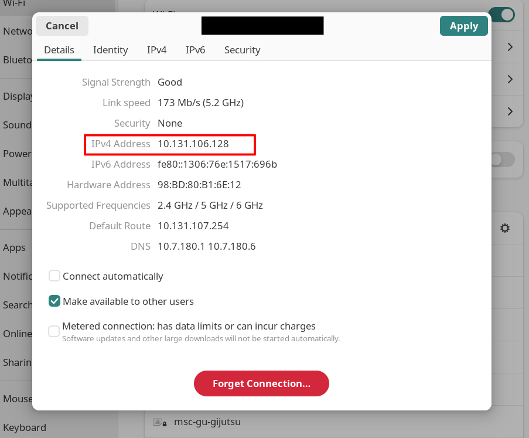

RLG G1 Neckの実行方法
このガイドは、開発キットを受け取っているか、インストール手順に従ってG1 Neckソフトウェアスタックが システムにインストールされ、配線ガイドに従ってすべての配線が完了している状態を前提としています。
これには2つの側面があります: PC(jetson)側とヘッドセット側です。まずPCスタックを起動し、 CloudXRサービスを立ち上げる必要があります。
その後、CloudXRサービスを通じてヘッドセットをPCに接続し、ヘッドトラッキングとカメラ映像を取得できます。
開始する前に、必要なものの一覧を以下に示します：
- RLG G1 Devkit（Jetson/PC + RLG G1 Neck）
- IsaacTeleopが対応しているVRヘッドセット（こちらを参照）
- ビデオストリーミング用に低レイテンシーと高帯域幅が確保できるネットワーク
- キーボード、マウス、画面（必要に応じて）
最後に、PCとヘッドセットが同じネットワークに接続されていることを確認してください。
PCの起動
Warning
ベアメタルインストールでは、IsaacTeleopが正常に機能するためにはシステムPythonが必要です！ スタックを開始する前に、以下のコマンドでcondaまたはPython環境を無効化してください：
conda deactivate
deactivate
詳細はこちらを参照してください。
- PCの電源を入れ、G1 Neckスタックがインストールされているアカウントにログインします。
開発キットの場合、これは
g1neckアカウントです。パスワードをお持ちでない場合は、提供元にお問い合わせください。
Note
Accuvisionのみ：左カメラに13度のピッチ補正を適用する必要があります。正確な値はユニットの組み立て方によって 異なる場合があります。動作中にカメラの位置調整を実施できます。 デコーダーが設定データを保存できるようになるまでは、電源を再接続するたびにこの操作を行う必要があります。
- マイクロUSBケーブルを左カメラデコーダーのUARTポートに接続します。

gtktermを開きます。インストールされていない場合は、sudo apt install gtktermでインストールしてください。- デコーダーに接続されているポートを選択します。通常は
/dev/ttyUSB0です。ボーレートを115200に設定します。 pを押してピッチ角度を選択します。130と入力してからenterを押して13度を入力します。
- Ctrl + Alt + tを押して新しいターミナルを開きます。
- G1 NeckスタックのROS2ワークスペースに移動します。デフォルトでは
~/workspaces/twist2_neck_demoにあります。cd ~/workspaces/twist2_neck_demo - ワークスペースをソースします。
source install/setup.sh - ROS2 Launchfileを使ってG1 Neckスタックを起動します。
これにより、CloudXRサービスが自動的に開始され、G1 Neckスタック全体が起動します。
ros2 launch twist2_neck_ros2 twist2_neck.launch.py
おめでとうございます！PC側で行うことはこれですべてです。次はヘッドセット側です。
ヘッドセットとPCの接続
このセクションはNVIDIAの公式ガイド とほぼ同じ内容です。
- ヘッドセット側でブラウザを開き、https://nvidia.github.io/IsaacTeleop/client/main/にアクセスします。
- ホストPCがJetsonの場合、サイドパネルで動画コーデックを
H.265に設定してください。
- Server IPの欄にPCのIPアドレスを入力します。

自分のIPアドレスが分からない場合は、デスクトップのWi-Fi設定から確認できます。

ターミナルを使い慣れている場合、またはLinuxコマンドラインツールの経験があれば、でも確認できます。ip address
スタックの停止・再起動
G1 Neckスタックを実行しているターミナルでCtrl+cを押すとスタックが停止します。再起動するには、
ros2 launch twist2_neck_ros2 twist2_neck.launch.py
カメラの位置調整
これはAccuvisionカメラを使用している場合にのみ該当します。 ヘッドセットを装着し、テレオペレーションセッションを開始して、映像が「正常」に見えるか確認してください。
違和感がある場合、左右の映像がずれている可能性があります。 片目を閉じて切り替えることで、この状態かどうかを確認できます。
開発キットでは、左右のカメラ映像の間に13度のピッチのずれがあります。 この原因はまだ不明ですが、カメラデコーダーのUARTインターフェースを通じて補正できます。
PCの起動の手順2の手順4までを実行してください。その後、ピッチ補正角度を入力します。形式は次の通りです：十の位 一の位 小数点。
例えば、ピッチ補正を10.5に設定する場合は、105と入力します。デコーダーは設定データを保存しないため、
この角度を記録しておいてください。電源を再接続するたびに設定を再適用する必要があります。
想定通りに動作しない場合は、トラブルシューティングページに進んでください。